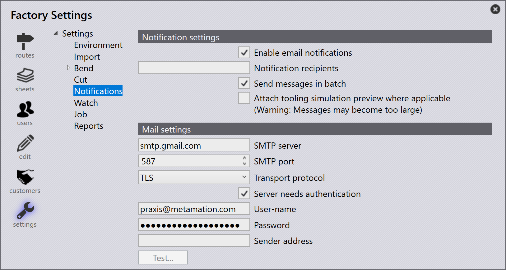
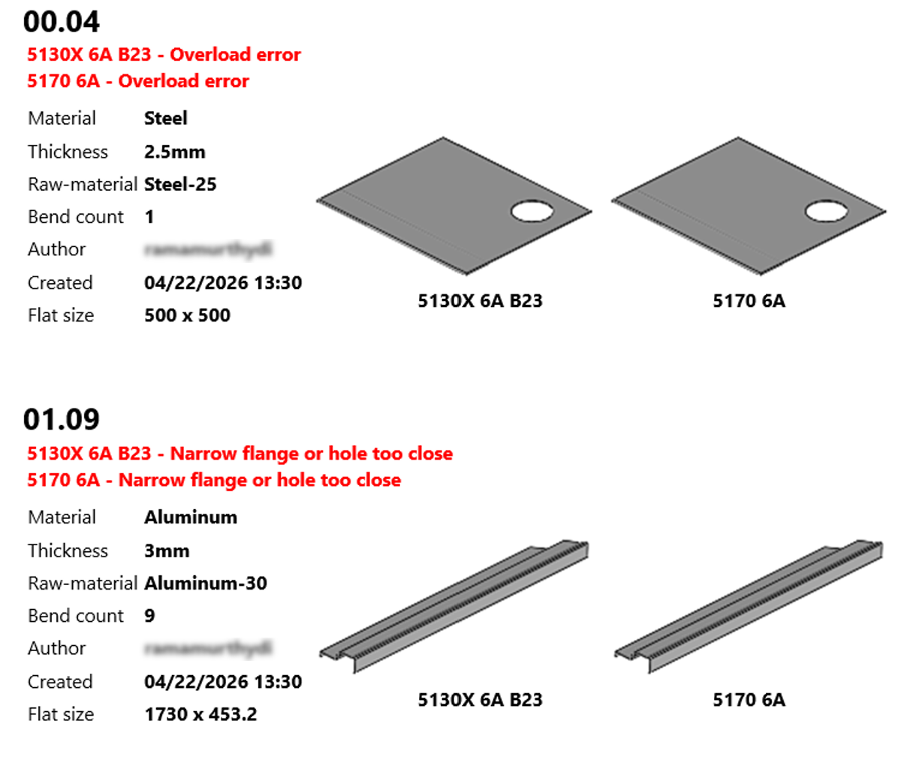

Notificações
As notificações informam os usuários sobre erros de CAD e ferramentaria que ocorrem dentro do sistema. Elas garantem que os problemas sejam comunicados prontamente para que as ações apropriadas possam ser tomadas.
Notificação por e-mail
O recurso de notificação por e-mail permite que os usuários configurem e recebam alertas automáticos por e-mail para erros de CAD e ferramentaria. Uma vez configurado, o sistema envia automaticamente e-mails para os destinatários especificados sempre que um evento relevante ocorre, garantindo que os problemas sejam tratados prontamente.
Para configurar notificações por e-mail, navegue até: fábrica > ajustes > Notificações

A página Notificações consiste nas seguintes seções:
Configurações de notificação
A seção Configurações da notificação controla como os alertas por e-mail são gerados e entregues aos destinatários.
-
Habilitar notificações por email - Habilita o sistema a enviar notificações com base nas condições configuradas.
-
Destinatários da notificação - Especifica o(s) endereço(s) de e-mail dos destinatários. Múltiplos destinatários podem ser adicionados separando-os com uma vírgula (
,) ou um espaço. -
Enviar mensagens em lote - Combina múltiplas notificações em um único e-mail. Mensagens geradas dentro de um intervalo de tempo definido são agrupadas, o que ajuda a reduzir o volume de e-mails e previne acúmulo.

-
Anexar pré-visualização de simulação do ferramental, onde aplicável + - Anexa uma pré-visualização da simulação de ferramentaria ao e-mail de notificação quando disponível. Isto é útil para revisar problemas relacionados à ferramentaria diretamente do e-mail.

| Incluir a pré-visualização da simulação pode aumentar significativamente o tamanho do e-mail. |
Configurações do e-mail
A seção Configurações do e-mail define a configuração do servidor de e-mail de saída que o sistema usa para entregar notificações por e-mail. Essas configurações devem estar configuradas corretamente para que as notificações sejam enviadas com sucesso.
-
Servidor SMTP - Especifica o endereço do servidor SMTP usado para enviar e-mails de saída (por exemplo,
smtp.gmail.com). Esta informação está normalmente disponível na seção de conta ou configurações do cliente de e-mail do usuário. -
Porta SMTP - Define o número da porta usada pelo servidor de e-mail para enviar e-mails pela internet. Valores comuns incluem
465(SSL) e587(TLS). -
Protocolo de transporte - Especifica o protocolo usado para enviar e-mails com segurança do aplicativo para o servidor de e-mail (por exemplo, SSL ou TLS).
-
O servidor requer autenticação - Habilita autenticação para o servidor SMTP. Quando habilitado, o nome de usuário e senha são validados pelo servidor antes que os e-mails sejam enviados.
-
Nome do usuário - Especifica a conta de e-mail usada para autenticar com o servidor SMTP e enviar notificações.
-
Senha - Especifica a senha associada à conta de e-mail usada para autenticação.
-
Sender address - Especifica o endereço de e-mail do remetente que é exibido aos destinatários quando as notificações são recebidas.
-
Teste… - Envia um e-mail de teste para verificar a configuração do servidor de e-mail.
Clique em Teste… para validar a configuração. Uma mensagem de confirmação é exibida se o teste for bem-sucedido; caso contrário, uma mensagem de erro é mostrada indicando a causa da falha.
|